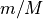
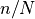

mplearn.feature_selection.AdaSTAMPS
-
class
mplearn.feature_selection.AdaSTAMPS(base_selector, *, minipatch_m_ratio=0.05, minipatch_n_ratio=0.5, sampling_options=None, stopping_criteria_options=None, random_state=0, keep_all_iters=True, max_iters_to_keep=None, verbose=0)[source] Feature selection with Adaptive Stable Minipatch Selection.
This is a meta-algorithm that repeatedly fits base feature selectors to many random or adaptively chosen subsets of both observations and features (minipatches) and ensembles the selection events from all these base selectors. At the end of the algorithm, the final selection frequency is computed for each input feature as the number of times it is sampled and then selected by base selectors divided by the number of times it is sampled into minipatches. The selection frequency signifies the importance of features. The algorithm eventually selects the set of features whose selection frequency is above a certain threshold (can be either user-specific or determined automatically).
Important note:
AdaSTAMPSassumes that all necessary pre-processing steps prior to feature selection have already been carried out on the input data (X, y). For instance, data standardization (centering and/or scaling) needs to be performed on the raw data prior to callingfit()if such data pre-processing is deemed necessary by the users.- Parameters
- base_selector
Selectorinstance A feature selector with a
fitmethod that provides binary selection indicators (1 for selected features and 0 for unselected features). See Notes for more details.- minipatch_m_ratiofloat, default=0.05
The fraction of features to draw from X to train each base selector. Specifically,
round(minipatch_m_ratio * X.shape[1])features are drawn into each minipatch. Thus,minipatch_m_ratioshould be in the interval (0.0, 1.0]. See Notes for more details.- minipatch_n_ratiofloat, default=0.5
The fraction of observations to draw from X to train each base selector. Specifically,
round(minipatch_n_ratio * X.shape[0])observations are drawn into each minipatch. Thus,minipatch_n_ratioshould be in the interval (0.0, 1.0]. See Notes for more details.- sampling_optionsdict, default=None
Dictionary with parameter names (
str) as keys and specific parameter settings as values. This specifies the randomization scheme used to sample features into minipatches. Unless set toNone,sampling_optionsis required to have a key named'mode', whose value must be one of {‘ee’, ‘prob’, ‘uniform’}. It is recommended to setsampling_optionstoNonefor starters, which uses the default Exploitation & Exploration adaptive feature sampling scheme with parameter values set to respective recommended values as described below. See Notes for more details.If
'mode'has value ‘ee’, it uses the Exploitation & Exploration scheme to adaptively sample features into minipatches. In this case,sampling_optionsis required to have the following parameters as additional keys:'E': int. The number of burn-in epochs during which every feature is sampled exactly'E'times to get an initial guess of feature importance before starting the adaptive sampling of features. A value of 10 generally works well for many problems. Note that a larger'E'generally requires increase the maximum number of iterations ('max_k') instopping_criteria_options.'active_set_thr': float. The selection frequency threshold above which a feature is put into the active set during the adaptive sampling stage. A value of 0.1 generally works well for many problems. Note that its value should be in the interval (0.0, 1.0). A larger value generally means fewer features in the active set.'gamma_min': float. The minimum proportion of features in the active set to sample into minipatches at the beginning of the adaptive sampling stage. It is recommened to fix its value to 0.5. Note that its value should be in the interval (0.0, 1.0), and should not exceed the value of'gamma_max'.'gamma_max': float. The maximum proportion of features in the active set to sample into minipatches as the adaptive sampling scheme proceeds. It is recommened to fix its value to 1.0. Note that its value should be in the interval (0.0, 1.0).'gamma_len': int. The number of iterations it takes for the adaptive feature sampler to go from'gamma_min'to'gamma_max'. This controls the trade-off between exploiting the active set and exploring the remaining input feature space. In general, a smaller value favors exploitation while a larger value favors exploration. A value in the range [50, 500] generally works well for many problems.
If
'mode'has value ‘prob’, it uses the Probabilistic scheme to adaptively sample features into minipatches. In this case,sampling_optionsis required to have the following parameters as additional keys:'E': Int. This is the same as the'E'parameter in the case of'mode'being ‘ee’. See the descriptions above for details.
If
'mode'has value ‘uniform’, it samples features uniformly at random into minipatches. In this case,sampling_optionsdoes not need to have other key-value pairs.
- stopping_criteria_optionsdict, default=None
Dictionary with parameter names (
str) as keys and specific parameter settings as values. This specifies parameter values for the data-driven stopping rule, which stops the meta-algorithm when the rank ordering of the top features in terms of selection frequency remain unchanged for the past'num_last_iterations'. Unless set toNone,stopping_criteria_optionsis required to have 4 keys:'tau_u','tau_l','max_k', and'num_last_iterations'. It is recommended to setstopping_criteria_optionstoNonefor starters, which sets the parameter values to the respective default as described below.'tau_u': int. This specifies the maximum number of top features whose rank orderings should be considered when assessing the stopping rule. It is recommened to set its value to well exceed the expected number of truly informative features. The default value is set to 30. Note that its value should be much smaller than the total number of input features.'tau_l': int. This specifies the minimum number of top features whose rank orderings should be considered when assessing the stopping rule. It is recommened to set its value to well exceed the expected number of truly informative features. The default value is set to 15. Note that its value should be much smaller than'tau_u'.'num_last_iterations': int. The algorithm stops when the rank ordering of the top features in terms of selection frequency remain unchanged for the past'num_last_iterations'. It is recommended to fix its value to 100. Note that a unreasonably large value could render the stopping rule ineffective.'max_k': int. The maximum number of iterations to run the meta-algorithm if the data-driven stopping rule has not stopped it earlier. The default value is set to 5000. If'mode'ofsampling_optionsis set to {‘ee’, ‘prob’} and'max_k'is set toNone, the algorithm will automatically compute'max_k'to be 5 times the number of burn-in iterations.
- random_stateint, default=0
Controls both the randomness of sampling observations and sampling features into minipatches.
- keep_all_itersbool, default=True
Whether to store and output intermediate featrue selection frequency across all iterations. It could be useful to visualize selection frequency of all features versus iteration number for qualitatively discovering informative features. However, if the number of input feature is large (e.g. hundreds of thousands), then it is recommended to set this to
Falseto avoid consuming too much memory. If set toFalse, it is required to set a value formax_iters_to_keep.- max_iters_to_keepint, default=None
This value is ignored if
keep_all_itersisTrue. Otherwise, this specifies the number of iterations (counting backwards from the last iteration) for which feature selection frequency should be stored and output. Note thatmax_iters_to_keepshould be at least as large as the'num_last_iterations'ofstopping_criteria_options(which is the default whenmax_iters_to_keepis set toNone).- verbose{0, 1, 2}
Controls the verbosity: the higher, more messages are displayed.
- base_selector
Notes
More details about
base_selector: The AdaSTAMPS meta-algorithm can be employed with a wide variety of feature selection techniques as the base selector on minipatches. This package current provides two highly efficient base selector classes -minipatch_feature_selection.base_selector.ThresholdedOLSfor regression problems andminipatch_feature_selection.base_selector.DecisionTreeSelectorfor both regression and classification problems. However, user-supplied selector is also allowed as long as the selector class follows the same structure as the two base selectors mentioned above (i.e. has afitmethod that accepts minipatch feature indices and provides binary selection indicators (1 for selected features and 0 for unselected features).More details about choice of minipatch size: Suppose the data X has N observations (rows) and M features (columns). Following the notations of [1], a minipatch is obtained by subsampling n observations and m features simultaneously without replacement from X using some form of randomization. The parameter
minipatch_m_ratiorepresents  andminipatch_n_ratiorepresents . As demonstrated in [1], the performance of the meta-algorithm is robust for a sensible range of n and m values. The general rule of thumb is to take m to well exceed the expected number of true informative features (e.g. 3-10 times the expected number of true informative features) and then pick n relative to m such that it well exceeds the sample complexity of the base selector used.We refer the users to the original paper [1] for detailed algorithms for the various sampling procedures and the stopping rule.
References
- Rd4534dbd4ccf-1
Yao, T. and Allen, G. I., “Feature Selection for Huge Data via Minipatch Learning”, arXiv:2010.08529.
The following example shows how to retrieve the 4 truly informative features in the sparse regression dataset. >>> from sklearn.datasets import make_sparse_uncorrelated >>> from mplearn.feature_selection.base_selector import ThresholdedOLS >>> from mplearn.feature_selection import AdaSTAMPS >>> X, y = make_sparse_uncorrelated(n_samples=100, n_features=10, random_state=0) >>> thresholded_ols = ThresholdedOLS(num_features_to_select=None, screening_thresh=None) >>> selector = AdaSTAMPS(base_selector=thresholded_ols, … minipatch_m_ratio=0.5, … minipatch_n_ratio=0.5, … random_state=123, … verbose=0) >>> fitted_selector = selector.fit(X, y) >>> fitted_selector.get_support(indices=True, pi_thr=0.5) array([0, 1, 2, 3]) >>> X_new = fitted_selector.transform(X, pi_thr=0.5) >>> X_new.shape (100, 4) >>> fitted_selector.visualize_selection_frequency(max_features_to_plot=None) # doctest: +SKIP
- Attributes
- last_k_int
The total number of iterations for which the meta-algorithm has run.
- Pi_hat_last_k_array of shape (n_features, )
The final selection frequency for each of the input features. Each element is in the interval [0.0, 1.0]. A larger value indicates that the corresponding feature is more informative, vice versa.
- full_Pi_hat_seq_array of shape (n_features,
last_k_) or (n_features,max_iters_to_keep) If
keep_all_itersisTrue, then this is an array of shape (n_features,last_k_) containing the selection frequency of all input features from first iteration to the last. Ifkeep_all_itersisFalse, then this is an array of shape (n_features,max_iters_to_keep) containing the selection frequency of all input features for the lastmax_iters_to_keepiterations.- full_Pi_hat_k_seq_array of shape (
last_k_, ) or (max_iters_to_keep, ) This contains the iteration numbers corresponding to the columns of
full_Pi_hat_seq_.- burn_in_length_int
The total number of iterations spent in the burn-in stage. If
'mode'ofsampling_optionsis set to ‘uniform’ or ifkeep_all_itersisFalse, this is set toNone.
-
fit(self, X, y)[source] Fit the AdaSTAMPS model to data.
- Parameters
- Xndarray of shape (n_samples, n_features)
The training input samples. Note that data frame or sparse matrix format are not allowed. Also, the dtype of X has to be numeric (e.g. float, int). The algorithm expects that all appropriate preprocessing steps on X have been completed.
- yndarray of shape (n_samples,)
The target values. Note that for classification problems (categorical y), the input y should contain integers denoting class labels instead of actual class names (
str). In other words, the dtype of y has to be numeric (e.g. float, int).
- Returns
- selfobject
Fitted estimator.
Notes
Allows NaN/Inf in the input if the underlying estimator does as well.
-
get_params(self, deep=True) Get parameters for this estimator. Parameters ———- deep : bool, default=True
If True, will return the parameters for this estimator and contained subobjects that are estimators.
- paramsdict
Parameter names mapped to their values.
-
get_support(self, indices=False, pi_thr=None)[source] Get a mask, or integer index, of the features selected by the meta-algorithm.
- Parameters
- indicesbool, default=False
If True, the return value will be an array of integers, rather than a boolean mask.
- pi_thrfloat, default=None
The selection frequency threshold above which a feature is considered selected. A larger threshold indicates a more stringent criterion. By default (
None), a data-driven procedure is run to choose this threshold automatically. This is generally recommended, however, this procedure might take a long time if [# input features] is large (e.g. hundreds of thousands). For many problems, setting this threshold to 0.5 is a reasonable choice. Note that this threshold must be within (0.0, 1.0).
- Returns
- supportarray
If
indicesisFalse, this is a boolean array of shape [# input features], in which an element is True iff its corresponding feature is selected by the algorithm. IfindicesisTrue, this is an integer array of shape [# output features] whose values are indices into the input feature vector.
-
set_params(self, **params) Set the parameters of this estimator. The method works on simple estimators as well as on nested objects. The latter have parameters of the form
<component>__<parameter>so that it’s possible to update each component of a nested object. Parameters ———- **params : dictEstimator parameters.
- selfestimator instance
Estimator instance.
-
transform(self, X, pi_thr=None)[source] Reduce X to the selected features.
- Parameters
- Xndarray of shape (n_samples, n_features)
The input samples. Note that data frame or sparse matrix format are not allowed. Also, the dtype of X has to be numeric (e.g. float, int).
- pi_thrfloat, default=None
The selection frequency threshold above which a feature is considered selected. See the documentations of
get_supportfor details.
- Returns
- X_rndarray of shape (n_samples, n_selected_features)
The input samples with only the selected features.
-
visualize_selection_frequency(self, max_features_to_plot=None)[source] Visualize the selection frequency of features
It is generally useful to visualize the selection frequency of the input features versus number of iterations for better insights into the estimated importance of the features.
- Parameters
- max_features_to_plotint, default=None
Controls the maximum number of features whose selection frequency over iterations are visualized. By default (‘None`), all input features are shown. However, such visualization might consume too much memory if the number of input feature is too large (e.g. 5000). In such cases, consider setting
max_features_to_plotto be much smaller than n_features, which will only plot a small fraction of features whose selection frequency is below 0.3 to save on memory consumption.
- Returns
- None